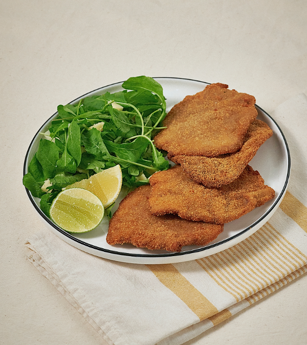

Milanesa

What is the best meat for milanese?
Choosing the right cut of meat is the first step to achieving perfect milanese. The most common cuts are the top round, bottom round, rump, and eye of round. Each has different characteristics that affect the flavor and texture of the Milanese. Rump is one of the most popular options thanks to its lean meat and lack of connective tissue. It is a large cut, ideal for obtaining good-sized Milanese with a tender texture.
The eye of round, For its part, it is known for being smaller and leaner. Its meat tends to be very tender, although it is characterized by its more rounded pieces. This cut is ideal for those looking for a milanesa with a more delicate profile. The top round, on the other hand, offers a juicy option, although it can fall apart if sliced too thinly, since it is composed of two muscles. Finally, the bottom round, which is more economical, has a fibrous texture, but forms a single-piece steak, making it easier to handle in the kitchen.
Ingredients for the marinade
To prepare breaded beef cutlets with an irresistible flavor, the marinade plays a fundamental role. This mixtureis key to ensuring the meat absorbs intense flavors before breading. The ingredients needed are:
- 8 small steaks
- Breadcrumbs for coating
For the marinade
- 2 eggs
- 1 tablespoon of Dijon mustard
- Lemon juice and zest
- 1 finely chopped garlic clove
- Fresh chopped parsley
- 1 tablespoon of grated cheese
- Salt and pepper to taste
How to prepare the marinade
The first step in learning how to make breaded meat cutlets is to prepare the marinade.
- Start by whisking the eggs in a large bowl, and once they are well mixed, stir in the mustard, lemon juice and zest, garlic, and parsley. These ingredients add freshness and a citrusy touch to the recipe.
- Next, add the grated cheese, salt, and pepper, and mix well to ensure all the flavors are properly combined. This step is crucial for juicy and flavorful milanese. The marinade should thoroughly coat the milanese, so it's important to completely submerge them in the egg and seasoning mixture.
- For best results, it's recommended to let the meat rest in the refrigerator for at least an hour. This allows the flavors to penetrate the meat, enhancing its taste. If possible, it's ideal to let the milanese rest longer for even better results.
- Once the milanese have rested in the refrigerator for the required time, remove them and prepare them for breading. It is essential to bread them well, pressing the breadcrumbs against the meat so that it is completely coated. This step is key to achieving a crispy texture.
- To cook the breaded cutlets, heat oil in a frying pan until very hot. Fry each milanesa for a few minutes on each side, until golden brown and crispy. For a lighter option, they can also be baked at 180 °C until cooked through and golden brown.